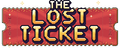
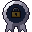
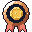
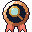
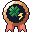
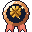
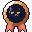
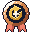

Scratch by hand
Move your mouse over the card and every symbol plays a note. Big wins explode into BIG WIN, HUGE WIN and JACKPOT, and 1 card in 25,000 is a rainbow Secret Rare.
A Goonboi. Games production

You threw away a million-dollar ticket. It's in here somewhere.
One recycled batch of 100,000 scratch cards. Scratch by hand, grow your luck, build a desk full of machines and beat a crooked ticket broker to your Grand Prize.
Mac (75 MB) Windows (115 MB) version 1.2.6
This game runs on Mac and Windows computers. Open this page on your computer to download it.
When it finishes, follow the steps below. It only takes a moment.
Try it right here
Every card in the game is scratched with your mouse: just move it over the silver, no clicking needed. This one's on the house. Scratch it with your mouse or finger.
0% scratched
From a small desk to a ridiculous operation
Move your mouse over the card and every symbol plays a note. Big wins explode into BIG WIN, HUGE WIN and JACKPOT, and 1 card in 25,000 is a rainbow Secret Rare.
A four-leaf clover, a golden horseshoe, a rabbit's foot. LUCKY wins pay up to x10, losing cards get Lucky Saves, a full meter starts a LUCKY RUSH, and Lucky Draw makes the cheap cards stop showing up.
Every few minutes a golden clover drifts across the desk for 13 seconds. Click it for a cash bonus, an instant Lucky Rush or a full clover meter.
Auto scratchers, vacuums, conveyors, filters and sorters. Take on quick jobs, level up, and unlock sparkle trails and titles.
The clue scanner never lies about where your ticket is. Narrow 200 bundles down to one before Rex Dorsey gets there first.
Dot runs the paper plant, Gus fixes the machines, Pickles the cat brings the luck. Design your own avatar and play your part, chapter by chapter.
Found it? Start over stronger. Spend Lucky Staples in a perk tree, collect trinkets, unlock challenges and chase faster times.
Bronze, silver, gold and platinum badges, from your first scratch to the ones you'll brag about. Some are secret.
New in 1.3
Every achievement is a badge: 16 bronze 12 silver 13 gold 8 platinum and 5 secrets you'll have to find yourself. Harder badges give more XP: up to ten times as much for platinum.


Now We're TalkingBronzeClaim a rare prize ($25+).
Getting Warmer (Truthfully)BronzeRun your first clue scan.
Rush HourBronzeStart a Lucky Rush.
Pot of GoldBronzeCatch a Golden Clover.
Good KittyBronzePet Pickles 10 times.
Clean SlateBronzeStart a new run.Free. Version 1.2.6. Updates install themselves.
TheLostTicket-mac.dmg from your Downloads.TheLostTicket-windows.exe from your Downloads (if your browser asks, choose Keep).Why the warning? The game isn't signed with a paid Apple or Microsoft developer certificate yet, so your computer can't recognise the publisher. It's the same warning every new indie game gets. See Safety for how to verify your download.
The first time you open the game, you pick a name (up to 16 letters, numbers, _ or -). That's it. No sign-up.
Each file has a fingerprint (SHA-256). If yours matches, it's exactly the file published here.
7477ef17e81facc1b41f7244a797ec119fb67142eb15a00061b6303a7b8e542de248278c3d1807a04596bad5d340eef3b73b4f5d3e193622392afe710450989cMac: open Terminal and run shasum -a 256 ~/Downloads/TheLostTicket-mac.dmg
Windows: open PowerShell and run Get-FileHash $HOME\Downloads\TheLostTicket-windows.exe
The list is also in SHA256SUMS.txt.
Yes. No ads and nothing to buy.
No. You can play everything offline. The internet is only used for leaderboards when they're available, and to check for updates.
On your computer. Mac: ~/Library/Application Support/Godot/app_userdata/The Lost Ticket. Windows: %APPDATA%\Godot\app_userdata\The Lost Ticket. Two backup copies are kept, and a damaged save is repaired from them automatically.
About 1 card in 25,000 is a rainbow Prismatic Secret worth $2,500 to $50,000 of in-game money. Rare wins like that stay on your desk as trophies; everything else is collected and recycled with one click.
The game checks for a new version when it starts and every hour while you play. Small updates download in the background and apply the next time you start the game (there's a "Restart now" button). Your progress is kept. If an update ever fails to start, the game switches back to the previous version by itself.
You pick it once on your first launch. If it's already taken online, the game asks you to choose another and keeps your progress.
Mac with macOS 11 or newer (Apple chips and Intel). Windows 10 or 11, 64-bit.
Finding the lost ticket usually takes about an hour the first time. After that you can prestige, unlock permanent upgrades and challenges, and chase faster times. Under 20 minutes earns a platinum badge.